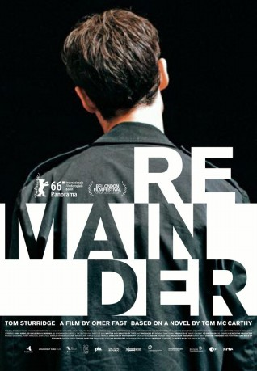

#5350 Remainder
 
 IMDB-Wertung: 6.0 / 10
IMDB-Wertung: 6.0 / 10  Tomatometer: 91
Tomatometer: 91  Metascore: 0
Metascore: 0 
Wie die unendliche Schleife eines Möbiusbands beginnt und endet REMAINDER im selben Moment. Darin liegt der Ausschnitt eines Lebens: Nachdem er sein Gedächtnis bei einem schweren Unfall verloren hat, versucht ein junger Mann, sich selbst zu verstehen, indem er in seine bruchstückhafte Erinnerung eintaucht. Die achteinhalb Millionen Pfund Schadensersatz, die er unter der Maßgabe des Stillschweigens erhalten hat, ermöglichen es ihm, sich immer obsessiver eine Welt und eine Identität zusammenzubauen, in der sich die mögliche Vergangenheit in der Gegenwart realisiert.
Jahr: 2015
Dauer: 99 Minuten
FSK: 16
Land: England Studio: Piffl MedienTonspuren: DD5.1 - ,
Untertitel: Deutsch,
Auflösung: 1080p (1920x800) Größe: 8110 MB
Genre: Drama
Regisseur: Omer Fast
Drehbuch: Gerda Corbett
Soundtrack:
Darsteller:
 Tom Sturridge als Tom
Tom Sturridge als Tom- Cush Jumbo als Catherine
 Ed Speleers als Greg
Ed Speleers als Greg- Arsher Ali als Naz
- Shaun Prendergast als DI Merril
 Laurence Spellman als Number 2
Laurence Spellman als Number 2- Benjamin Davies als Driver
 Nicholas Farrell als Daubenay
Nicholas Farrell als Daubenay- Sasha Frost als Call Girl
 Andrew Havill als Peter Younger
Andrew Havill als Peter Younger Jumayn Hunter als Christopher
Jumayn Hunter als Christopher Tim Plester als Cat-Handler
Tim Plester als Cat-Handler Adrian Schiller als Dr. Trevellian
Adrian Schiller als Dr. Trevellian- Elias Esser als
- Maxamillian Johnstone als Child on Stairs
- Attila G. Kerekes als Bank Customer
- Jacqueline Macaulay als Nurse
- Lanre Malaolu als Yardie
- Agnes Thi-Mai als The Ghost
- Bill Thomas als Phil the contractor
Datei: X:\2015(N-Z)\Remainder (2015, FSK16, 1920x800).mkv seit 17.01.2017
Festplatte: HD 2015(A-Z)
 Es gibt insgesamt 161 Filme in der Gruppe '2015(N-Z)'
Es gibt insgesamt 161 Filme in der Gruppe '2015(N-Z)'